2026
Voice of Vineeth Sreenivasan Live
A memorable evening of Malayalam music, performance and community celebration in Shepparton.
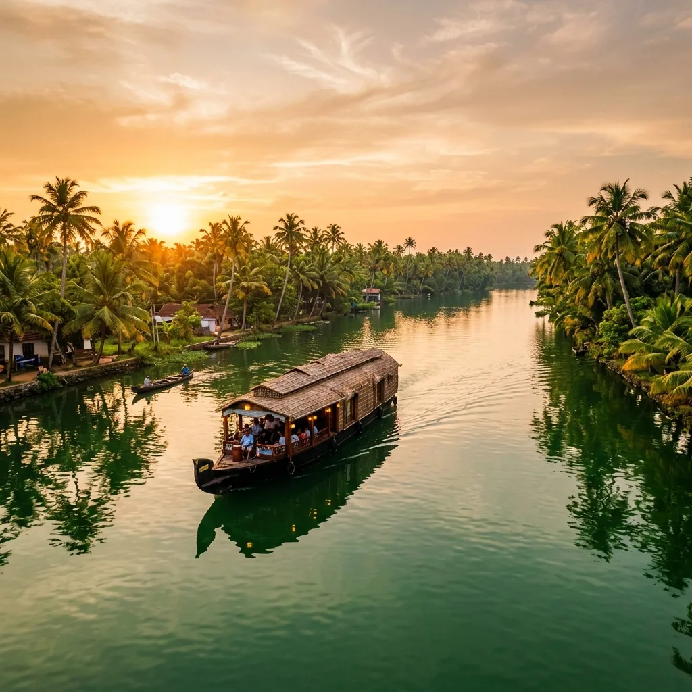
ഷെപ്പാർട്ടൺ മലയാളി അസോസിയേഷൻ
Since 2016, over 350 Malayalee families have made Shepparton home — bringing Kerala's warmth, traditions, and community spirit to the Goulburn Valley.
Backwaters, performing arts, festivals and iconic landscapes of God's Own Country.
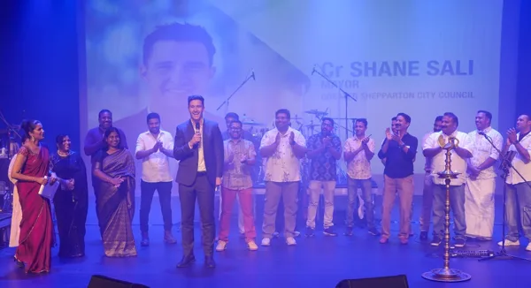
Shepparton Malayalee Association (SHEMA) is a community organisation representing Malayalee families living in and around Shepparton. We preserve cultural identity, support community connection and celebrate Kerala's rich traditions through cultural events, festivals and social gatherings.
Kerala is known for its scenic backwaters, rich artistic heritage and diverse traditions — a culture deeply rooted in hospitality, community values and a strong emphasis on education and service.
Many of our families contribute significantly to the region, particularly in healthcare — nursing, aged care and allied health services — forming an important part of the local workforce.
Onam, Vishu & Kerala festivals celebrated annually
Fostering connections among Malayalee families
Contributing to nursing, aged care & allied health
Strengthening Greater Shepparton's diversity
The dedicated team working behind the scenes to bring the SHEMA community together.
President
Secretary
Treasurer
Celebrating a Decade of Service, Dedication & Community Leadership
Historical committee portraits and service years will be added here after the photographs and details are approved for publication.
A land of enchanting backwaters, ancient performing arts, and timeless traditions that have captivated the world for centuries.
Moments from our community celebrations, cultural events and gatherings that bring the Shepparton Malayalee community together.
With Cr Shane Sali, Mayor — Greater Shepparton City Council
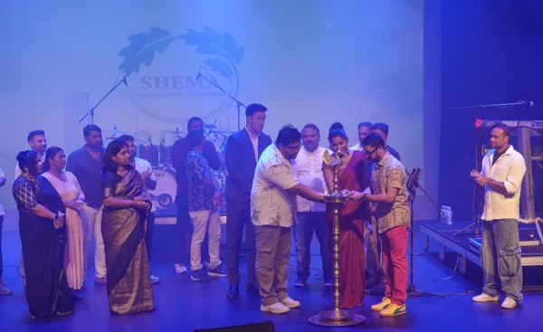
Nilavilakku ceremony — an auspicious beginning to every Kerala celebration
Relive the performances, celebrations and shared experiences that brought the SHEMA community together.
A memorable evening of Malayalam music, performance and community celebration in Shepparton.
A vibrant showcase of music, dance, drama and creative talent from across our multicultural community.
A community day of friendly competition, teamwork and activities for participants of all ages.
Event photographs will be added after approval.
Traditional Sadhya and cultural performances, including highlights from the Onam Core Committee 2K26 and Onam Celebration 2K26.
An evening of culture, friendship and community spirit shared by SHEMA families and friends.
From grand temple festivals to intimate family gatherings, Kerala's cultural tapestry is woven with vibrant art forms, rituals and celebrations.
Photographs of Kerala heritage, separate from SHEMA events. Detailed photograph credits and licenses.
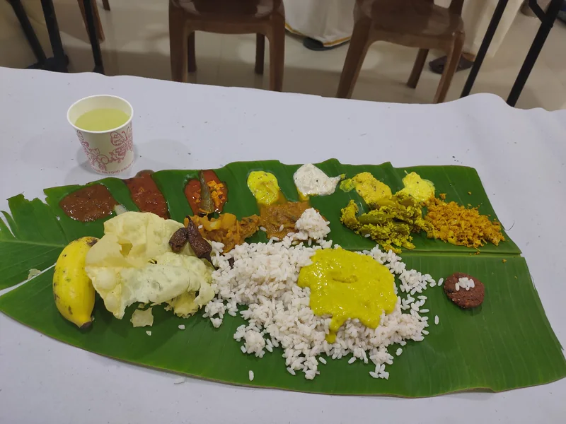
Kerala's harvest festival featuring Pookalam (floral carpets), boat races, and the grand Onam Sadhya feast
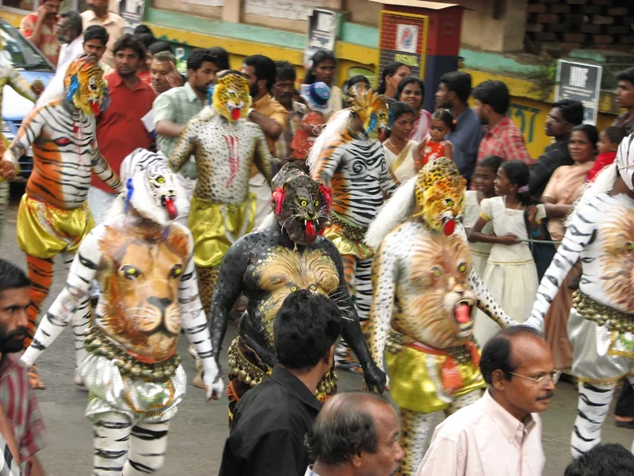
The spectacular tiger dance of Thrissur — performers paint their bodies as tigers and dance through the streets
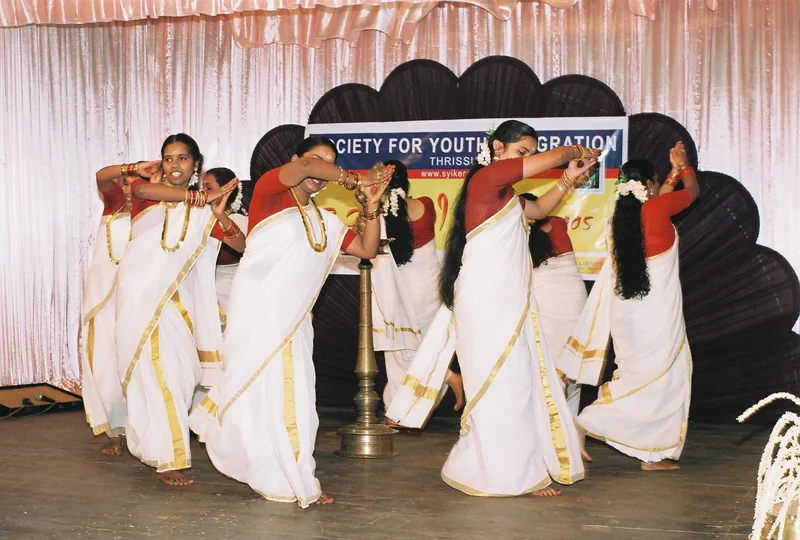
Graceful group dance performed by women in white and gold sarees during the Thiruvathira festival
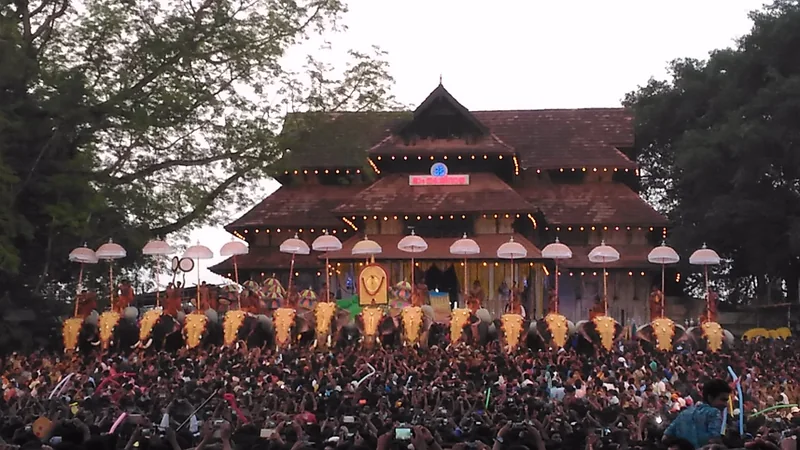
Kerala's most iconic temple festival with decorated elephants, Chenda Melam percussion, and fireworks
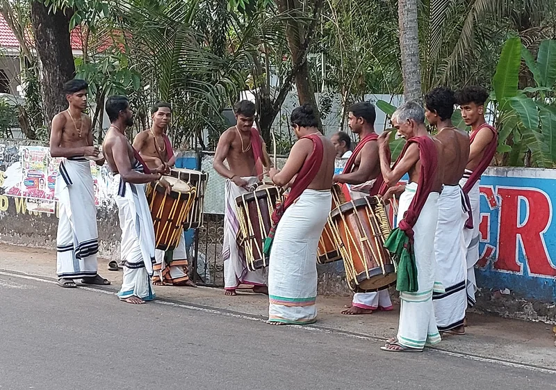
The thunderous percussion ensemble using the Chenda drum — a cornerstone of Kerala's temple festivals
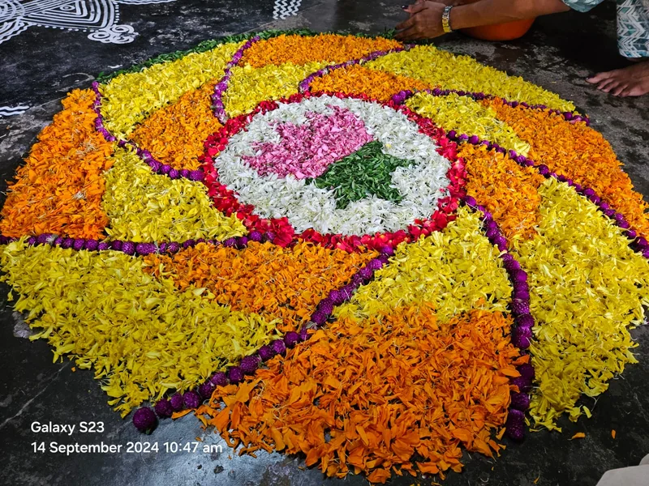
Intricate floral carpet designs made with fresh flower petals during the ten-day Onam celebrations
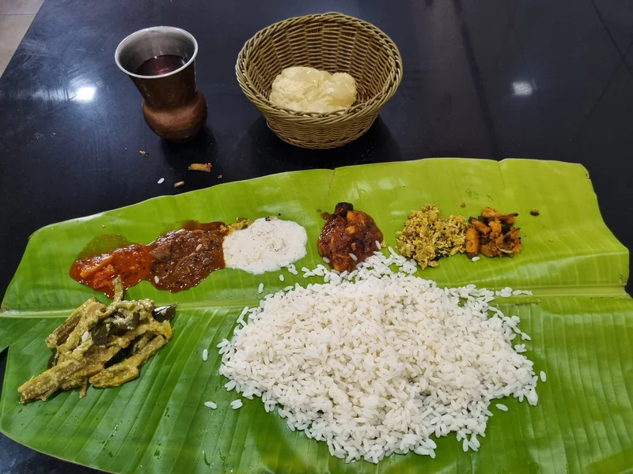
Puttu, Appam, traditional Sadhya — a rich culinary heritage built on coconut, spices and rice
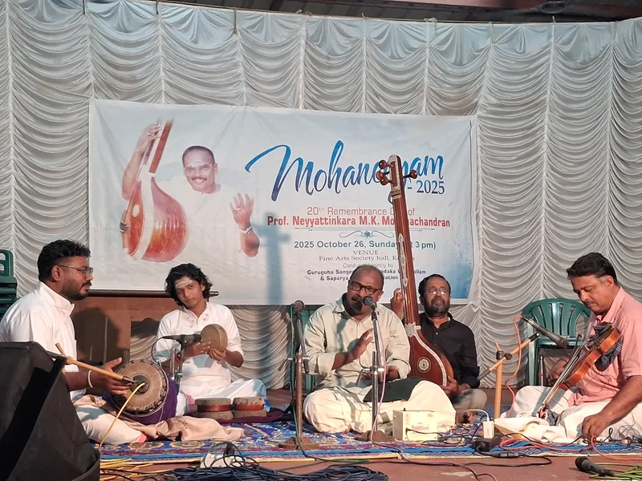
Carnatic music and Sopana Sangeetham — Kerala's devotional musical traditions at temples
Source: Kerala Tourism. Watch on the official external pages below.
Onam customs and celebrations across Kerala.
Watch on Kerala Tourism (opens in a new tab)Painted performers bring the tiger dance to the streets of Thrissur.
Watch on Kerala Tourism (opens in a new tab)Explore the group dance and its Thiruvathira festival roots.
Watch on Kerala Tourism (opens in a new tab)The ceremonial umbrella display at the Thrissur festival.
Watch on Kerala Tourism (opens in a new tab)Festival coverage with percussion at Peruvanam in Cherpu, Thrissur district; distinct from Thrissur Pooram.
Watch on Kerala Tourism (opens in a new tab)A historical promotion celebrating floral carpet designs; entries are not advertised as open.
Watch on Kerala Tourism (opens in a new tab)Discover Sadhya, breakfast dishes and the wider food traditions of Kerala.
Watch on Kerala Tourism (opens in a new tab)Festival and classical music context in Thiruvananthapuram; not a complete concert recording.
Watch on Kerala Tourism (opens in a new tab)SHEMA is an incorporated association dedicated to preserving the cultural identity of Malayalee families in Shepparton and supporting community connection through events and gatherings.
Malayalee families contribute significantly to the Shepparton region's healthcare sector, including nursing, aged care and allied health services — forming a vital part of the local workforce.
Through cultural events, educational programs and social gatherings, SHEMA bridges the gap between Kerala's ancient traditions and Australia's multicultural society.
From ancient temples to misty hill stations, Kerala's landmarks tell the story of a land steeped in history, spirituality and natural beauty.
One of the richest and most sacred Hindu temples in the world, located in Thiruvananthapuram, dedicated to Lord Vishnu.
Dramatic red laterite cliffs overlooking the Arabian Sea — one of Kerala's most spectacular coastal landscapes.
Rolling hills carpeted with emerald tea plantations in the Western Ghats — Kerala's most photographed hill station.
A historic port town blending Portuguese, Dutch and British colonial architecture with Chinese fishing nets and spice markets.
Kerala's artisans have perfected unique crafts over centuries — many now protected with Geographical Indication status.
Legendary metal mirror handcrafted using a secret alloy — a GI-tagged marvel
Handwoven silk sarees with distinctive designs from the Kasaragod region
The "King of Spices" — premium black pepper from Kerala's spice gardens
Eco-friendly coconut fibre products crafted in the backwater region of Alleppey
ഷെമ കമ്മ്യൂണിറ്റിയിൽ ചേരൂ
Whether you're a Malayalee family in Shepparton or someone who loves Kerala's culture, we welcome you to be part of our vibrant community.
Event Gallery
No photographs are available in this gallery yet. You can watch the event using the Facebook link on the event card.